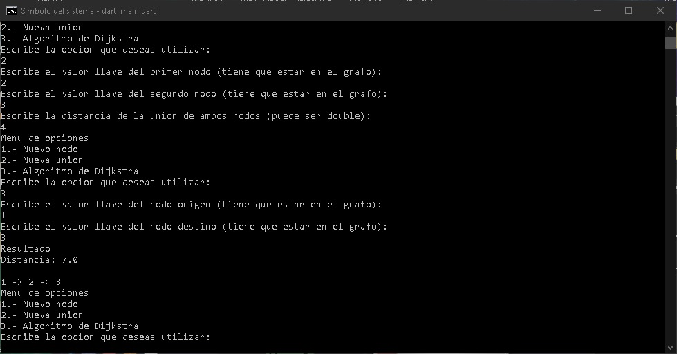

Historia
Dart fue revelado en la conferencia GOTO en Aarhus, Dinamarca, del 10 al 12 de octubre del 2011. El proyecto fue fundado por Lars Bak y Kasper Lund. Los dos fundadores utilizan mucho JavaScript, mayormente utilizado para desarrollo web. La intención de Google con la creación de Dart es simplificar la creación de aplicaciones web mas complejas. Siguen mejorando el uso de JavaScript, pero eso no los detiene en encontrar nuevas soluciones. Dart es un lenguaje multiparadigma: programación funcional, programación imperativa, programación orientada a objetos y programación reflexiva. Permite el desarrollo de aplicaciones web, pero también permite desarrollo de aplicaciones para Android, iOS, macOS, y se encuentra en desarrollo la habilidad de realizar aplicaciones para Linux y Windows.
Ventajas
- Lenguaje familiar, fácil de entender.
- Librerías básicas robustas.
- Manejador de paquetes.
- Compila a JavaScript para mayor compatibilidad.
- Minimización de programas (borrar caracteres innecesarios del código fuente).
- dart2js realiza Tree Shaking para reducir el tamaño del código.
- La maquina virtual es muy rápida y utiliza código fuente, no necesita compilaciones extra.
- Mixins, interfaces implícitas, “this”, interpolación de strings, funciones de una línea, noSuchMethod.
- Reflection API completa.
Desventajas
- El lenguaje no ha madurado tanto como Java.
- No contiene tantos paquetes como Node.js.
- A comparación de JavaScript, este todavía no ha sido adoptado por muchos y no crece tan rápido como dicho lenguaje.
Variables y Tipos
El lenguaje Dart tiene soporte para los siguientes tipos de datos básicos:
- Numbers
- puedes elgir entre 'int' (valor entero) y 'double' (números de punto flotante).
- Strings
- palabra clave: String. Puedes representar un string usando comillas dobles ("Hola Mundo") o simples ('Hola Mundo').
- Booleans
- puedes declarar un booleano usando la palabra 'bool'. Solo dos objetos tienen este valor: 'true' y 'false'.
- Lists
- listas o arrays son colleciones de objetos. Para crear una, debes encerrar los objetos en '[ ]' y separar cada elemento por comas. La palabra clave para este tipo de dato es 'List'.
- Sets
- similar a List, la palabra clave para este tipo de dato es 'Set' y para crear una debes encerrar los objetos en '{ }' y separarlos por comas.
- Maps
- un map es un objeto que relaciones una clave con un valor, estos dos elementos puedes ser de cualquier tipo de dato. Su palabra clave es 'Map'.
Reglas para crear identificadores
- Los identificadores deben comenzar con una letra o un guión bajo.
- Después del primer caracter puede haber cualquier combinación de letras, números y guiones bajos.
Formas de relacionar un tipo de dato a una variable
- Dart es un lenguaje fuertemente tipado, lo que significa cuando quieras declarar una variable, será necesario adjuntar el tipo de dato, de la siguiente manera: tipo de dato + identificador.
- A pesar de esto, Dart también tiene la capacidad de inferir el tipo de dato. Por lo tanto, otra opción para la declaración de variables es usar el keyword 'var' en lugar del tipo de dato.
- Por último, puedes utilizar la palabra clave 'dynamic', la cual sirve para decir que una variable no tiene un tipo específico.
Expresiones
El lenguaje Dart posee expresiones aritmeticas, relacionales y booleanas. A continuación se muestran unas tablas con todos los operadores, sus reglas de precedencia y asociatividad, así como la sintaxis de asignación.
Tabla de operadores
| Descripción | Operador | Asociatividad | Precedencia |
|---|---|---|---|
| unary postfix | |
Ninguna | 16 |
| unary prefix | |
Ninguna | 15 |
| multiplicative | |
Izquierda | 14 |
| additive | |
Izquierda | 13 |
| shift | |
Izquierda | 12 |
| bitwise AND | |
Izquierda | 11 |
| bitwise XOR | |
Izquierda | 10 |
| bitwise OR | |
Izquierda | 9 |
| relational and type test | |
Ninguna | 8 |
| equality | |
Ninguna | 7 |
| Logical AND | |
Izquierda/td> | 6 |
| logical OR | |
Izquierda | 5 |
| if null | |
Izquierda | 4 |
| conditional | |
Derecha | 3 |
| cascade | |
Izquierdatd | 2 |
| assignment | |
Derecha | 1 |
Sintaxis de asignación
assignmentOperator ::= '=' | compoundAssignmentOperatorcompoundAssignmentOperator ::= operator'='
Por ejemplo: a += b
Estructuras de Control de Flujo
Puedes controlar el flujo de tu código en Dart usando alguna de las siguintes sentencias:
ifandelseforloopswhileanddo-whileloopsbreakandcontinueswitchandcaseassert
Sentencia para selección múltiple
La condición múltiple en Dart puede realizarse mediante la sentencia switch, su sintaxis es la siguiente:
switch (command) { // 'switch' (valor a evaluar) { casos }
case 'CLOSED': // 'case' (valor) para definir un caso
executeClosed();
break; // se debe usar 'break' al final de cada caso
case 'PENDING':
executePending();
break;
case 'APPROVED':
executeApproved();
break;
case 'DENIED':
executeDenied();
break;
case 'OPEN':
executeOpen();
break;
default: // un caso general (opcional), si el valor no coincide con ninguno de lo casos
executeUnknown();
}Sentencia de iteración con condición postest
do-while es la sentencia que evalua la condición después del ciclo. Su sintanxis es la siguiente:
do { // 'do' { contenido } 'while' (condición)
printLine();
} while (!atEndOfPage());Subprogramas
La sintaxis para la declaración y definición de funciones es la siguiente:
functionSignature ::= metadata type? identifier formalParameterPartformalParameterPart ::= typeParameters? formalParameterListfunctionBody ::= async? '=>' expression';' | (async | async'*' | sync'*')? blockblock ::= '{' statments '}'
Métodos de paso de parámetros
- Los tipos de datos primitivos utilizan paso por valor.
- Los objetos utilizan paso por referencia.
Aplicación de Ejemplo
A continuación te presentamos un ejemplo de un programa escrito totalmente en Dart.
Es una sencilla aplicación en consola que te permite agregar un grafo y calcular la ruta más corta entre dos nodos. Puedes acceder al siguiente repositorio para descargar el código y ejecutarlo, las instrucciones para correrlo se encuentran ahí mismo:
https://github.com/alanmoraales/grafo-dart 